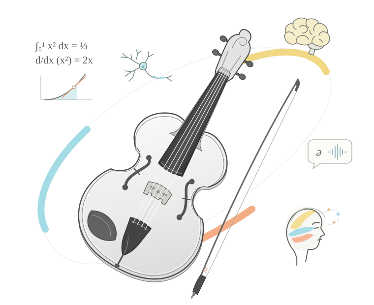

Life Cycle Indonesia
As a junior sustainability and strategy analyst, Eidee uses interviews and AI-assisted analysis to study where users get stuck in a sustainability reporting platform.
Mind, Brain, Art & Music
Eidee is a Seattle-area student and chamber violinist. She explores how people interpret language and how AI can help them make precise edits to music and video.

Eidee wants to study how people use context to understand what a speaker means, and how computers can act on those same cues. Her projects explore what happens when someone asks an AI system to make one change to a score or a video and expects the surrounding work to stay intact.
She’s drawn to programs that bring computer science, language and the study of the mind together.
Linguistics abstract
Two studies examine how language models interpret requests to revise music, including which details a composer expects to keep.
Music technology preprint
A workflow for adding a sung part to a piano recording, with a score composers can use to review and correct notes, syllables and pronunciation.
Video editing manuscript
A video editing workflow that lets creators review choices about footage, timing and captions, and retain their corrections when the system rebuilds an edit.
As a junior sustainability and strategy analyst, Eidee uses interviews and AI-assisted analysis to study where users get stuck in a sustainability reporting platform.
As a market research analyst, Eidee studied competitors and used her findings to advise the startup’s cofounders.
Jules Massenet
Max Bruch
Allegro moderato and Adagio
Henryk Wieniawski
Op. 22
Henryk Wieniawski
Violin Concerto No. 2 in D minor, Op. 22
Wolfgang Amadeus Mozart
K. 218
Johann Sebastian Bach
Adagio
Johann Sebastian Bach
Allemande and Gigue, masterclass with James Ehnes
Johann Sebastian Bach
BWV 1006
Niccolò Paganini
Op. 1
Achille Quartet · April 2026
Eidee played first violin in the first movement. The Achille Quartet won first place in the Small String Ensemble category at the Washington State Solo and Ensemble Contest on April 24, 2026.
Live on Classical KING · November 2025
Eidee performed the first and third movements with violinist Caileen Wan and violist Zachery Pun.
The Presto finale was performed at Benaroya Hall with cellist Jesse Krentz.
Seattle Chamber Music Society · May 2026
Eidee performed the first movement of Mendelssohn’s Piano Trio No. 1 in a chamber music masterclass with James Ehnes.
Eidee has served as concertmaster at Newport High School and in the Seattle Youth Symphony Orchestra program.
Eidee and Selina Lai organize weekly coaching for middle school orchestra students, led by high school musicians.
Learn about OctaveAs co-director of education, Eidee helps develop teaching and creative projects for members of the youth-led music organization.
Meet the ConChord teamEidee volunteers and performs in concerts for residents of senior living communities in the Seattle area.
Meet the Andante performers